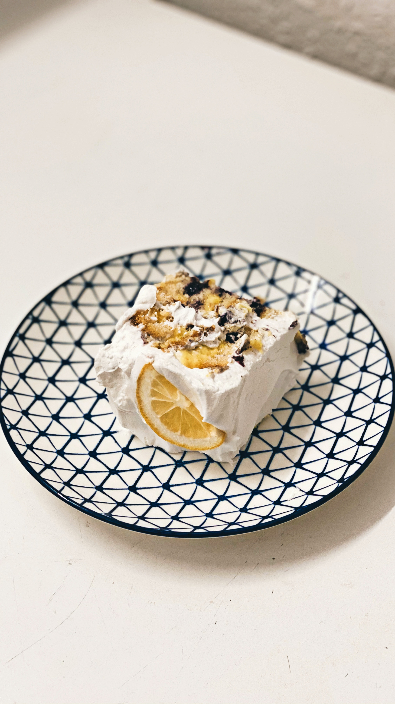

lemoncake
LEMONCAKE RECIPE
In a medium bowl combine the flour, baking powder, lemon zest, and salt. Set aside. In the bowl of a stand mixer fitted with the paddle attachment (or using an electric mixer), cream the butter and sugar together at medium-high speed until pale and fluffy, about 4-6 minutes. Scrape the sides of the bowl as needed. With the mixer running on low-speed, add the eggs one at a time, then beat in the vanilla extract and lemon juice. Beat on medium-high speed until combined. With the mixer on low, add about one-third of the flour mixture and mix until almost combined, then add half the buttermilk and mix until just combined. Repeat with another third of flour mixture and then the last half of the buttermilk, ending with the last third of the flour. Beat until just incorporated. Scrape the batter into the prepared loaf pan and bake for 45-55 minutes until the cake is golden brown and a toothpick comes out mostly clean with only a couple moist crumbs. Baking times vary, so keep an eye on yours. Let the cake cool for about 15 minutes in the pan. Stir together the lemon juice and confectioners’ sugar for the lemon syrup. Carefully invert the loaf pan, and transfer the cake to a cooling rack, then brush the syrup on the cake while it’s still warm. Allow cake to cool completely. When the cake is cooled, combine all the icing ingredients, start with 1 tbsp lemon juice and milk and add the remaining lemon juice as needed. The icing should be thick and not runny. Pour icing over cake and let dry before serving. If you don't have buttermilk, you can make your own by combining 1/2 cup of milk with 1.5 tsp lemon juice or white vinegar. Let the mixture sit for a few minutes until it starts to curdle. The longer you beat the sugar and butter, the better the result will be because this process incorporates air into the batter and makes the cake fluffy and tender I recommend using fresh lemon juice but you can also bottled lemon juice This cake would also taste great with lime juice or orange juice If you're not sure how well your cake pans perform make sure to line the pan with parchment paper. In my experience, this cake always comes out of the pan easily if it was greased well.